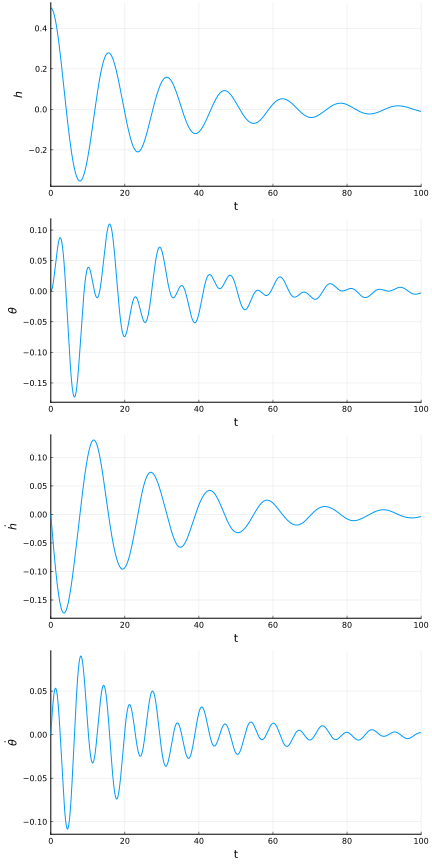

Getting Started
This guide introduces the basic functionality of this package in a step by step manner. This is a good starting point for learning about how to use this package. For more details about how to use a particular model or coupling, refer to the documentation for that particular model or coupling. For more examples of how to use this package see the examples.
Installing Aeroelasticity.jl
If you haven't yet, now would be a good time to install Aeroelasticity.jl. It can be installed from the Julia REPL by typing ] (to enter the package manager) and then running the following command.
pkg> add https://flow.byu.edu/Aeroelasticity.jl.jlNow, that the package is installed we need to load it so that we can use it.
using AeroelasticityAssembling a Coupled Model
For the purposes of this guide, we will be working with a two-degree-of-freedom typical section model, as shown in the following figure.

Our goal is to create an 2D aeroelastic model which we can use to simulate the behavior of this system. For the aerodynamic model, we will be using Peters' finite state model (see Peters). For the structural model, we will be using a two degree of freedom typical section model (see Section). To assemble an aeroelastic model using these two models we use the assemble_model function.
model = assemble_model(
aerodynamic_model = Peters{4}(),
structural_model = Section())Defining Model Parameters
Model parameters are defined using the assemble_parameters function. In addition to the aerodynamic and structural parameters, we need to define a set of additional parameters for the model coupling. A description of these parameters may be found in the documentation for each submodel and for the coupling.
# non-dimensional parameters
V = 1.0 # = U/(b*ωθ) (reduced velocity)
a = -1/5 # reference point normalized location
e = -1/10 # center of mass normalized location
μ = 20 # = m/(ρ*pi*b^2) (mass ratio)
r2 = 6/25 # = Iθ/(m*b^2) (radius of gyration about P)
σ = 2/5 # = ωh/ωθ (natural frequency ratio)
xθ = e - a # normalized distance from the reference point to the center of mass
a0 = 2*pi # lift curve slope
α0 = 0 # zero lift angle
cd0 = 0 # zero lift drag coefficient
cm0 = 0 # zero lift moment coefficient
# chosen dimensional parameters
b = 0.5 # semi-chord
ρ = 1 # air density
ωθ = 1 # pitch natural frequency
c = 343 # air speed of sound
# dimensionalized parameters
U = V*b*ωθ # velocity
m = μ*ρ*pi*b^2 # mass
Sθ = m*xθ*b # structural imbalance
Iθ = r2*m*b^2 # moment of inertia
ωh = σ*ωθ # plunge natural frequency
kh = m*ωh^2 # linear spring constant
kθ = Iθ*ωθ^2 # torsional spring constant
p = assemble_parameters(model;
aerodynamic_parameters = (a=a, b=b, a0=a0, alpha0=α0, cd0=cd0, cm0=cm0),
structural_parameters = (kh=kh, ktheta=kθ, m=m, Stheta=Sθ, Itheta=Iθ),
additional_parameters = (U=U, rho=ρ, c=c)
)Performing a Steady State Analysis
We can find steady state solution for our model using DifferentialEquations.
using DifferentialEquations
f = ODEFunction(model)
# initial guess for state variables
x0 = zeros(number_of_states(model))
# steady state problem
prob = SteadyStateProblem(f, x0, p)
# steady state solution
x_ss = solve(prob, SSRootfind())Note that since our system is linear with respect to the state variables, the equilibrium point of our system will be at the origin.
Performing a Stability Analysis
The stability of a model for a given set of state variables, inputs, and parameters may be determined by calling the get_eigen function, which returns eigenvalues, left eigenvectors, and right eigenvectors. For nonlinear systems, the provided state variables must correspond to an equilibrium point for the stability analysis to be theoretically valid. Since our aeroelastic system is linear with respect to the state variables, any set of state variables will yield the same result.
K, M = linearize(model, x_ss, p)
λ, U, V = get_eigen(model, K, M)A positive real part corresponding to any eigenvalue returned from the get_eigen function indicates that the system is unstable for the provided set of state variables, inputs, and parameters.
Performing a Time Domain Simulation
We can simulate the behavior of our system using DifferentialEquations. Initial state variable values and rates may be specified using the assemble_states function.
using DifferentialEquations
# construct ODE function
f = ODEFunction(model)
# non-zero plunge degree of freedom
x0 = assemble_states(model;
aerodynamic_states = (;lambda=zeros(4)),
structural_states = (;h=0.5, theta=0, hdot=0, thetadot=0))
# simulate for 100 seconds
tspan = (0.0, 100.0)
# assemble problem
prob = DifferentialEquations.ODEProblem(f, x0, tspan, p)
# solve ODE problem
sol = DifferentialEquations.solve(prob)We can use DifferentialEquations' built-in interface with the Plots package to plot the simulation results.
using Plots
pyplot()
plot(sol,
vars = [5,6,7,8],
xlabel = "t",
ylabel = permutedims([
"\$h\$",
"\$\\theta\$",
"\$\\dot{h}\$",
"\$\\dot{\\theta}\$",
]),
label = "",
layout = (4, 1),
size = (600,1200)
)
We can also visualize the results of the typical section model using the section_coordinates function.
# animation parameters
a = -1/5
b = 0.5
# create animation
anim = @animate for t in range(tspan[1], tspan[2], length=200)
h, θ = sol(t, idxs=7:8)
xplot, yplot = section_coordinates(h, θ; a, b)
plot(xplot, yplot;
framestyle = :origin,
grid = :false,
xlims = (-1.0, 1.0),
ylims = (-0.75, 0.75),
aspect_ratio = 1.0,
label = "t = $(round(t, digits=1))")
end
gif(anim, "guide-simulation.gif")
nothing #hide